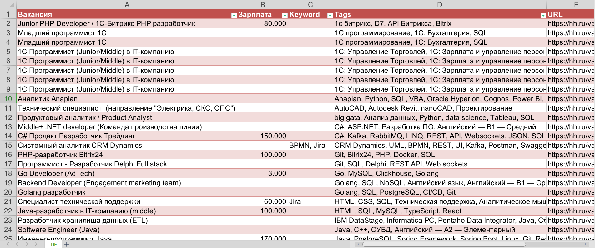

import requests
from bs4 import BeautifulSoup
import polars as pl
import re
import xlsxwriter
import time
# 1. Initialize an empty Polars DataFrame defining the schema of our output
df = pl.DataFrame({
"URL": pl.Series([], dtype=pl.Utf8),
"Вакансия": pl.Series([], dtype=pl.Utf8),
"Зарплата": pl.Series([], dtype=pl.Int64),
"Keyword": pl.Series([], dtype=pl.Utf8),
"Tags": pl.Series([], dtype=pl.Utf8)
})
query = "excel"
# 2. Construct the root URL based on manual website filters.
# Changing filters via the UI, appending the desired parameters to this string.
start_url = "https://hh.ru/search/vacancy?experience=between1And3" \
"&order_by=publication_time&ored_clusters=true" \
f"&schedule=remote&text={query}&search_period=7"
url = start_url
# 3. Define custom headers to simulate a legitimate browser request.
# Websites often block requests utilizing default python-requests user agents.
headers = {
"User-Agent": "Mozilla/5.0 (Windows NT 11.0; Win64; x64) " \
"AppleWebKit/538.33 (KHTML, like Gecko) Chrome/98.0.4472.124 Safari/537.36",
"Accept-Language": "ru-RU,ru;q=0.9",
"Accept-Encoding": "gzip, deflate, br",
"Connection": "keep-alive",
"Upgrade-Insecure-Requests": "1"
}
# 4. Define specific keywords or technologies to scan for within the vacancy descriptions.
keywords = ["BPMN", "Jira"] Web Scraping Job Vacancies
Parsing Data with requests and BeautifulSoup
Python
Web-Scraping
This code demonstrates how to programmatically extract information about job vacancies from hh.ru. The script scans the primary search results page, iterates through aggregated vacancies, navigates to each individual job posting, and selectively extracts relevant data points like salary, title, and required tech stacks.
Imports and Setup
The core libraries for this parsing task are:
1. requests: Handles the HTTP requests to communicate with the website and download the raw HTML.
2. bs4 (BeautifulSoup): An HTML parsing tool that traverses the raw HTML DOM string returned by requests, allowing us to search for specific tags and classes.
3. polars: High-performance data manipulation to store and prepare the scraped data.
4. xlsxwriter: Exports our final Polars DataFrame to a styled Excel spreadsheet.
Validating Extracted Pages
Modern web pages are complicated, and scraping requests occasionally return incomplete or broken domestic DOM trees (due to lazy-loading or server load). This function attempts to re-fetch a page up to 9 times if the core structural identifiers (like the vacancy-title container) fail to render.
def check_correctly(url):
for i in range(9):
response = requests.get(url, headers=headers)
soup = BeautifulSoup(response.text, 'html.parser')
# We designate the 'vacancy-title' div as our proof of a successful, complete load
header = soup.find('div', {'class': 'vacancy-title'})
if header:
# If successful, pass the soup context to the extraction function
visit_and_check(url, soup, response)
breakExtracting the Job Profile
This function dissects the specific job posting, scraping the title, salary, skills, and checking for our pre-defined keywords.
def visit_and_check(url, soup, response):
global df
fkeys = []
# Scan the raw text of the entire response for our predefined keywords
for keyword in keywords:
if keyword in response.text:
fkeys.append(keyword)
# Extract distinct skill tags located at the bottom of the vacancy page
skill_elements = soup.find_all('li', {'data-qa': 'skills-element'})
skills = [li.find('div', class_=re.compile(r'magritte-tag__label')).text for li in skill_elements]
# Extract Title Container
header = soup.find('div', {'class': 'vacancy-title'})
title = header.find('h1').text
# Salary Extraction Logic
# Often salaries contain ranges, words, or are omitted entirely.
salary_str = header.find('span', {'data-qa': 'vacancy-salary-compensation-type-net'})
if salary_str:
# Regex to strip out currency symbols, whitespace (\xa0), and words, catching the first integer
match = re.search(r'\d+', salary_str.text.replace('\xa0', ''))
if match:
salary = int(match.group())
else:
salary = None
else:
salary = None
# Vertically stack the newly parsed vacancy into our global dataframe
df = df.vstack(pl.DataFrame({
"URL": [url],
"Вакансия" : [title],
"Зарплата" : [salary],
"Keyword": [', '.join(fkeys)],
"Tags": [', '.join(skills)]
})) Iterating over the Search Results
This loop controls the pagination across the main search results. It iterates over the pages, extracts the individual vacancy URLs sequentially, and hands them off to the validation and extraction functions above.
# Iterate through the first 9 pages of search results
for p in range(9):
if p > 0:
# Construct the URL for the next paginated slice
url = f'{start_url}&page={p}'
print(f"--- Page {p} --- --- ---")
# The 9-iteration retry loop for the primary search page layout
for i in range(9):
# Crucial: Pause execution to avoid DDoS-ing the target server and risking an IP ban
time.sleep(3)
print(f"--- --- --- Iteration {i}")
response = requests.get(url, headers=headers)
soup = BeautifulSoup(response.text, 'html.parser')
# We ensure the root aggregate DOM wrapper (h2 tags in this case) has successfully loaded
if soup.find_all('h2'):
for h2 in soup.find_all('h2'):
for a in h2.find_all('a', href=True):
# Convert the potentially relative URL inside the href attribute to a full absolute URL
absolute_url = requests.compat.urljoin(url, a['href'])
# Offload the specific job scraping flow
check_correctly(absolute_url)
# Break the retry loop once we successfully process all vacancies on this page
break Exporting to Excel
After populating the global Polars DataFrame, we can dump the contents into a cleanly formatted .xlsx workbook utilizing python’s xlsxwriter.
wb = xlsxwriter.Workbook('Output.xlsx')
ws = wb.add_worksheet('DF')
# Utilize Polars native excel serialization with formatting options
df.write_excel(
workbook=wb,
worksheet='DF',
position="A1",
table_style="Table Style Medium 3",
dtype_formats={pl.Date: "mm/dd/yyyy"},
column_totals={"score": "average"},
float_precision=1,
autofit=True,
)
# Manually override the widths of specific columns for readability
ws.set_column('A:A', 10)
ws.set_column('B:B', 40)
ws.set_column('C:C', 10)
ws.set_column('D:D', 20)
ws.set_column('E:E', 90)
wb.close() Result
The resulting Excel file perfectly catalogues the market data for analysis.
